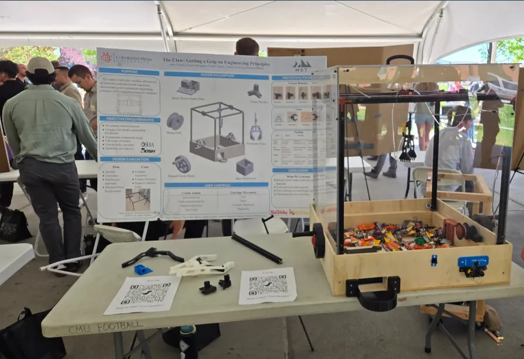

Fall 2026 · Year 3

53–64% lower fitted drag coefficient vs. blunt reference
Rocket Nose Cone Aerodynamics
Eight nose profiles; SolidWorks CFD, wind-tunnel testing and analysis.
Engineering portfolio / chronological view
Follow my progression from introductory team builds to independent mechanical design, simulation and experimental analysis.
Eight nose profiles; SolidWorks CFD, wind-tunnel testing and analysis.

Numerical dynamics, stress analysis, data reduction and signal processing.

Independent CAD, FEA and iterative FDM troubleshooting.

Mechanical packaging and component integration for a multidisciplinary prototype.

Mechanical CAD, manual gantry concept and pneumatic claw development.

Proposed the design approach, adapted it to project constraints, assisted fabrication and gathered test data.

Designed and built shop infrastructure and coordinated a fabrication team.
Projects are grouped by documented semester or year; the multi-year shop experience spans several of these projects.